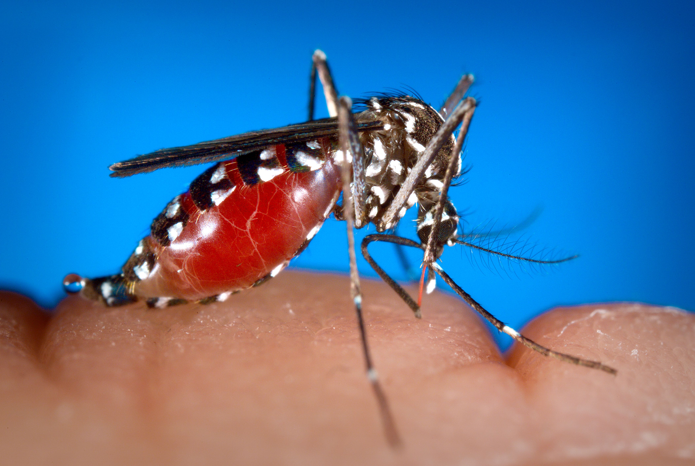

 El género Aedes pertenece a la familia Culicidae y engloba más de 900 especies de mosquitos, muchas de las cuales están presentes en diversas regiones tropicales, subtropicales y templadas del planeta. El origen evolutivo de este género se remonta a millones de años, con evidencia fósil que indica su existencia desde el período Terciario. Sin embargo, fue en tiempos más recientes que algunas especies como Aedes aegypti se adaptaron al entorno humano, convirtiéndose en vectores de virus que afectan gravemente a la salud pública mundial.
Originalmente, Aedes aegypti era una especie de mosquito selvática que se desarrollaba en huecos de árboles en zonas boscosas del África subsahariana. Con la expansión del comercio internacional y la colonización, especialmente a partir del siglo XV, esta especie fue transportada involuntariamente en barriles de agua de los barcos a América, Asia y otros continentes. A diferencia de otros mosquitos, A. aegypti mostró una notable capacidad para adaptarse a los ambientes urbanos, donde encontró nuevas oportunidades para reproducirse en contenedores artificiales como latas, neumáticos, baldes y floreros.
La evolución de este mosquito está marcada por su especialización en alimentarse casi exclusivamente de sangre humana (antropofilia) y su comportamiento diurno, lo que lo diferencia de otros mosquitos más activos durante la noche. Estas adaptaciones incrementaron su eficacia como vector, ya que su interacción con los humanos se volvió más frecuente y directa. En los últimos 50 años, el cambio climático, la urbanización acelerada y el aumento de los viajes internacionales han favorecido su dispersión, haciendo que su presencia y el riesgo asociado a las enfermedades que transmite sigan creciendo de forma preocupante.
El ciclo de vida del mosquito Aedes se compone de cuatro fases bien definidas: huevo, larva, pupa y adulto. Todo este proceso puede completarse en tan solo 7 a 10 días bajo condiciones favorables, como temperaturas cálidas y la presencia de agua estancada, lo que permite una reproducción rápida y eficaz.
La hembra adulta, luego de alimentarse de sangre, deposita los huevos justo por encima del nivel del agua en recipientes naturales o artificiales. Una característica particular de los huevos de Aedes es su alta resistencia: pueden sobrevivir en estado seco durante varios meses y eclosionar apenas entren en contacto con el agua. Esto representa una gran ventaja adaptativa, ya que no necesitan agua permanente para completar su desarrollo.
Una vez que los huevos eclosionan, emergen las larvas, también conocidas como "gusanillos", que viven en el agua y se alimentan de materia orgánica. Estas pasan por cuatro etapas de crecimiento conocidas como instares larvales. Posteriormente, se transforman en pupas, que no se alimentan, pero en cuyo interior ocurre la metamorfosis que dará lugar al mosquito adulto.
El adulto emerge de la pupa flotando sobre la superficie del agua. Una vez seco y con las alas endurecidas, el mosquito está listo para volar. Los machos se alimentan de néctar y jugos vegetales, mientras que las hembras requieren sangre para desarrollar sus huevos. Este comportamiento alimenticio es el que las convierte en vectores de enfermedades.
enfermedad viral que puede causar fiebre alta, dolor muscular, erupciones cutáneas y, en casos graves, hemorragias y shock. Existen cuatro serotipos del virus, lo que significa que una persona puede infectarse más de una vez, aumentando el riesgo de complicaciones graves.
virus que produce síntomas leves en la mayoría de las personas, como fiebre, sarpullido y conjuntivitis, pero puede causar malformaciones congénitas graves (como microcefalia) si infecta a mujeres embarazadas.
El mosquito Aedes provoca picaduras con enrojecimiento, hinchazón pequeña y fuerte picazón. Suelen aparecer en tobillos, piernas o brazos. Es conocido por transmitir enfermedades como el dengue, zika y chikungunya.